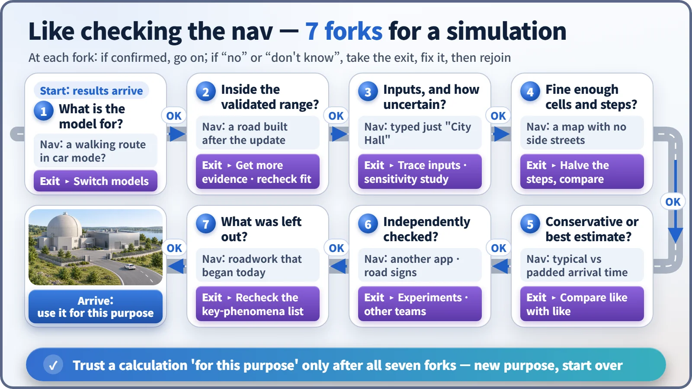
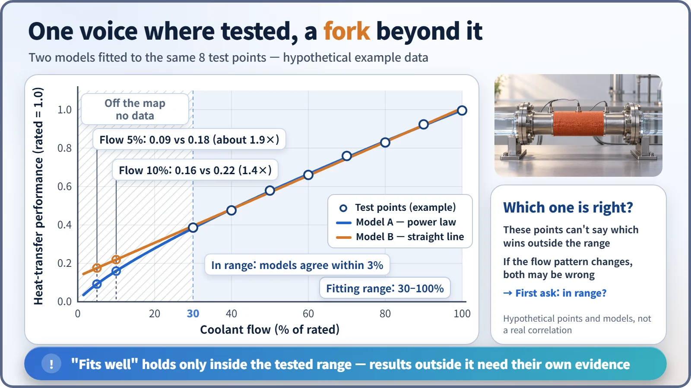

Modeling, Simulation & Computation · 275
Wait Before You "Turn Left" — Seven Questions to Ask Before Trusting a Simulation
Purpose, validated range, inputs, resolution, attitude, independent checks and omissions: the same questions nuclear licensing asks of every calculation.
Every simulation is a little wrong, so the real question is whether a result can be used for a given purpose. Seven questions, about purpose, validated range, inputs, resolution, conservative versus best-estimate attitude, independent checks and omissions, mirror what nuclear licensing asks as a formal procedure. [1]
Wait before you "turn left"
The statistician George Box put it memorably: "All models are wrong, but some are useful." So the question isn't "right or wrong?" but "can I use this result for this purpose?" We ask it every day in front of a navigation app. When it says "In 300 meters, turn left," we quickly check: is the destination right, is the map current, is that road under construction?
Nuclear calculations work the same way. A reactor pipe break can't be staged for real, so computer calculation is the main way to see what would happen. Here are seven questions to ask of such a result, each paired with a navigation situation.

Before you set off: purpose and scope
1. What question was the model built to answer? A navigation app in car mode gives odd walking directions. Models, too, are built around particular questions: a model for normal-operation core power distribution shouldn't be asked how water and steam escape from a broken pipe. Nuclear safety analysis procedures therefore begin by stating which accident and which value, such as peak fuel cladding temperature, are being examined. [1]
2. Is the situation inside the validated range? On a road built after the last map update, the navigation shows you driving through empty space. Calculation formulas are tuned where experimental data exist. The standard formula for how well water in a pipe carries away heat, for example, is meant for fast, turbulent flow; applied as is to nearly stagnant water, it is a different story.

Inside the tested range the two models agree within 3%. Lower the flow to 10% and they differ by a factor of 1.4; at 5%, by almost 2. Which is right? Without data outside the range, nobody knows, and if the flow pattern itself changes, both may be wrong.
| Coolant flow | Model A (power law) | Model B (straight line) | Ratio |
|---|---|---|---|
| 30–100% (tested) | agree within 3% | ≈ 1.0 | |
| 10% | 0.16 | 0.22 | 1.4× |
| 5% | 0.09 | 0.18 | about 1.9× |
On the road: ingredients and resolution
3. What went in, and how certain is it? Type only "City Hall" and you may be routed to another town's city hall. Calculations take inputs such as initial power, the decay heat that continues after fission stops, and valve opening times. The U.S. Nuclear Regulatory Commission (NRC) has noted that errors found in safety analyses came more often from users who prepare inputs and interpret results than from the codes themselves. [3] How much results wobble when inputs wobble is the job of sensitivity and uncertainty analysis.
4. Are the cells and time steps fine enough? A map without side streets can't take you to the door. Calculations chop space into cells (nodes) and time into steps. The check is simple: halve both, rerun, and if the result barely changes, it passes. If the peak temperature swings by tens of degrees each time the cells shrink, the answer is following the cell size, not reality.
Reading the arrival time: attitude, checks and blanks
5. Conservative calculation or best estimate? A "typical" and a "padded" arrival time lead to different departure times. A conservative calculation deliberately stacks unfavorable assumptions; a best estimate is the most plausible value with an uncertainty range. U.S. regulations accept both for evaluating emergency core cooling systems. [2] The trouble starts when they are mixed: a conservative result is not "the value that will actually happen."
6. Who checked it independently? On an unfamiliar road you open another app or read the signs. Calculations are compared with experiments, several teams solve the same test problem (benchmarks), and regulators sometimes recheck with their own calculations. [4] Agreement builds confidence; sharp disagreement tells you where to dig.
7. What was left out? This morning's roadwork may not be in the navigation. Every model omits something. Nuclear safety analysis lists and ranks the phenomena important to an accident, and asks for evidence that the low-ranked ones it dropped will not overturn the answer to this question. [1] [5]
Not doubting, but trusting properly
A result printed to five decimal places looks trustworthy, but many digits only mean the calculation ran meticulously, not that it matches reality, just as "Arrive 2:32 p.m." is no guarantee of accuracy. Precision and accuracy are different things.
The opposite illusion, "it might be wrong, so it can't be trusted," misses the point too. Calculation is the only tool for looking ahead at accidents we can't stage, which is why nuclear licensing asks these questions formally and requires written answers.
Key takeaways
Next time you see a smooth calculation graph, ask before reading the digits: What question was this model built to answer? Is this situation inside the validated range? Someone who uses navigation well isn't someone who distrusts the map, but someone who knows its limits.